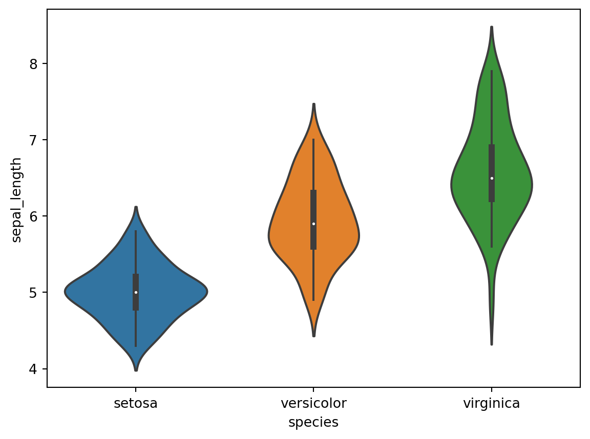
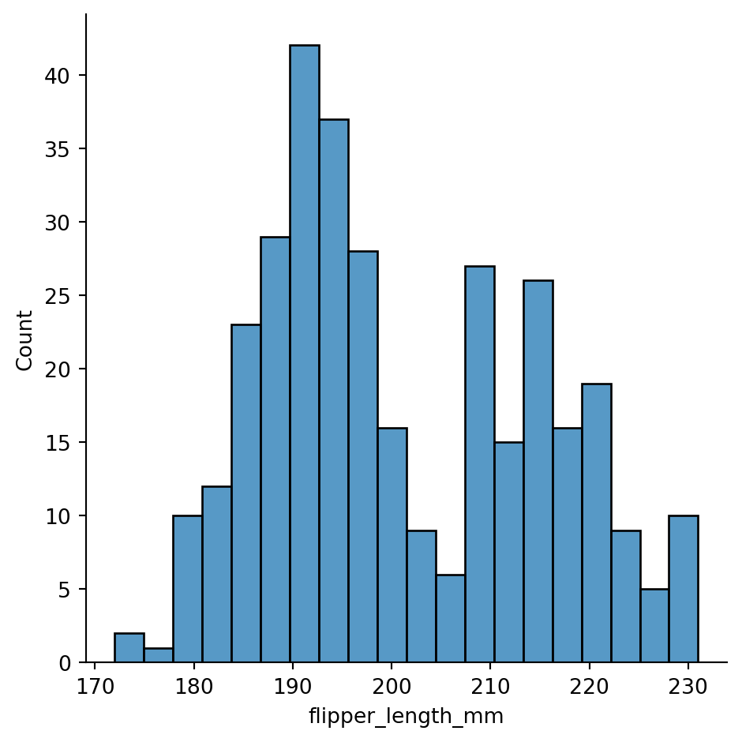
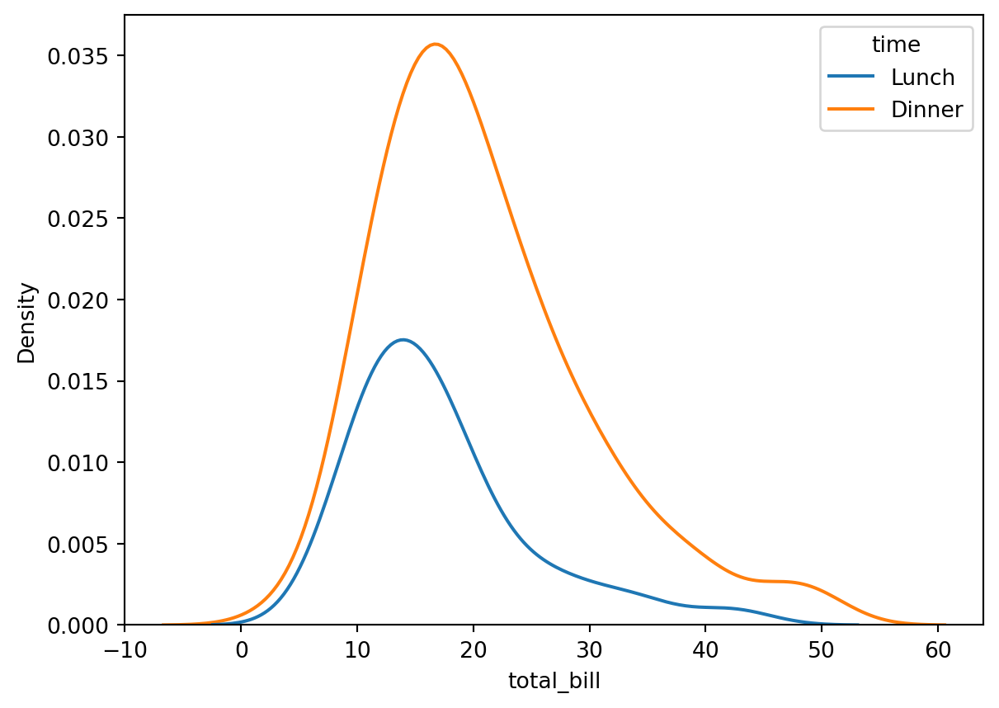

Code
import plotly.express as px
df = px.data.tips()
fig = px.box(df, x="time", y="total_bill")
fig.show()(Boxplots, Violin Plots, Histograms, Density plots, Ridgeline plots)
A box plot or boxplot is a way for graphically displaying the localization, spread, and skewness groups of numerical data through their quartiles in descriptive statistics. When lines (referred to as whiskers) extend from the box on a box plot to indicate variability outside the upper and lower quartiles, the plot is also known as a box-and-whisker plot or box-and-whisker diagram. Outliers that stand out from the rest of the dataset can be shown as separate points outside the box’s whiskers.
For a demonstration of a boxplot, see Figure 1.
import plotly.express as px
df = px.data.tips()
fig = px.box(df, x="time", y="total_bill")
fig.show()Numerical data can be plotted using a violin plot. With the addition of a rotated kernel density plot on either side, it is comparable to a box plot. Similar to box plots, violin plots also display the data’s probability density at various values, often smoothed by a kernel density estimator. The data from a box plot will typically be included in a violin plot as well, along with markers for the median, interquartile range, and, if the number of samples is not excessive, all sample points.
For a demonstration of a violin plot using seaborn, see ?@fig-ViolinPlot-seaborn.
# library & dataset
import seaborn as sns
df = sns.load_dataset('iris')
# plot
sns.violinplot(x=df["species"], y=df["sepal_length"]);
For a demonstration of a violin plot using plotly, see ?@fig-ViolinPlot-plotly.
import plotly.graph_objects as go
import pandas as pd
df = pd.read_csv("https://raw.githubusercontent.com/plotly/datasets/master/violin_data.csv")
pointpos_male = [-0.9,-1.1,-0.6,-0.3]
pointpos_female = [0.45,0.55,1,0.4]
show_legend = [True,False,False,False]
fig = go.Figure()
for i in range(0,len(pd.unique(df['day']))):
fig.add_trace(go.Violin(x=df['day'][(df['sex'] == 'Male') &
(df['day'] == pd.unique(df['day'])[i])],
y=df['total_bill'][(df['sex'] == 'Male')&
(df['day'] == pd.unique(df['day'])[i])],
legendgroup='M', scalegroup='M', name='M',
side='negative',
pointpos=pointpos_male[i], # where to position points
line_color='lightseagreen',
showlegend=show_legend[i])
)
fig.add_trace(go.Violin(x=df['day'][(df['sex'] == 'Female') &
(df['day'] == pd.unique(df['day'])[i])],
y=df['total_bill'][(df['sex'] == 'Female')&
(df['day'] == pd.unique(df['day'])[i])],
legendgroup='F', scalegroup='F', name='F',
side='positive',
pointpos=pointpos_female[i],
line_color='mediumpurple',
showlegend=show_legend[i])
)
# update characteristics shared by all traces
fig.update_traces(meanline_visible=True,
points='all', # show all points
jitter=0.05, # add some jitter on points for better visibility
scalemode='count') #scale violin plot area with total count
fig.update_layout(
title_text="Total bill distribution<br><i>scaled by number of bills per gender",
violingap=0, violingroupgap=0, violinmode='overlay')
fig.show()The distribution of numerical data is roughly depicted by a histogram. The first stage in creating a histogram is to “bin” (or “bucket”) the range of values, or divide it into a series of intervals, and then count the number of values that fall into each interval. The bins are often defined as a series of discrete intervals that don’t overlap. The bins (intervals) must be adjacent and are often (but not required to be) of equal size. A histogram may also be normalized to display “relative” frequencies. It then shows the proportion of cases that fall into each of several categories, with the sum of the heights equaling 1.
For a demonstration of a histogram using seaborn, see Figure 4.
penguins = sns.load_dataset("penguins")
sns.displot(penguins, x="flipper_length_mm", bins=20);
For a demonstration of a histogram using plotly, see Figure 5.
import plotly.express as px
df = px.data.tips()
fig = px.histogram(df, x="day", category_orders=dict(day=["Thur", "Fri", "Sat", "Sun"]))
fig.show()The distribution of data over a continuous interval or time period is seen using a density plot. This graph is a variant of a histogram that plots values using kernel smoothing to provide smoother distributions by eliminating noise. A density plot’s peaks can be used to show where values are concentrated across an interval.
Because the number of employed bins has no bearing on them, density plots have an advantage over histograms in that they are better at determining the distribution shape (each bar used in a typical histogram). A histogram with only four bins would not produce a sufficiently distinguishable distribution shape as would a histogram with twenty bins. This is not a problem with density plots, though.
For a demonstration of a kernel density estimate (KDE) plot using seaborn, see Figure 6.
tips = sns.load_dataset("tips")
sns.kdeplot(data=tips, x="total_bill", hue="time");
For a demonstration of a kernel density estimate (KDE) plot using plotly, see Figure 7.
import plotly.express as px
df = px.data.tips()
fig = px.histogram(df, x="total_bill", y="tip", color="sex",
marginal="box", # or violin, rug
hover_data=df.columns)
fig.show()Please see the links: https://www.python-graph-gallery.com/ridgeline-graph-seaborn https://towardsdatascience.com/ridgeline-plots-the-perfect-way-to-visualize-data-distributions-with-python-de99a5493052